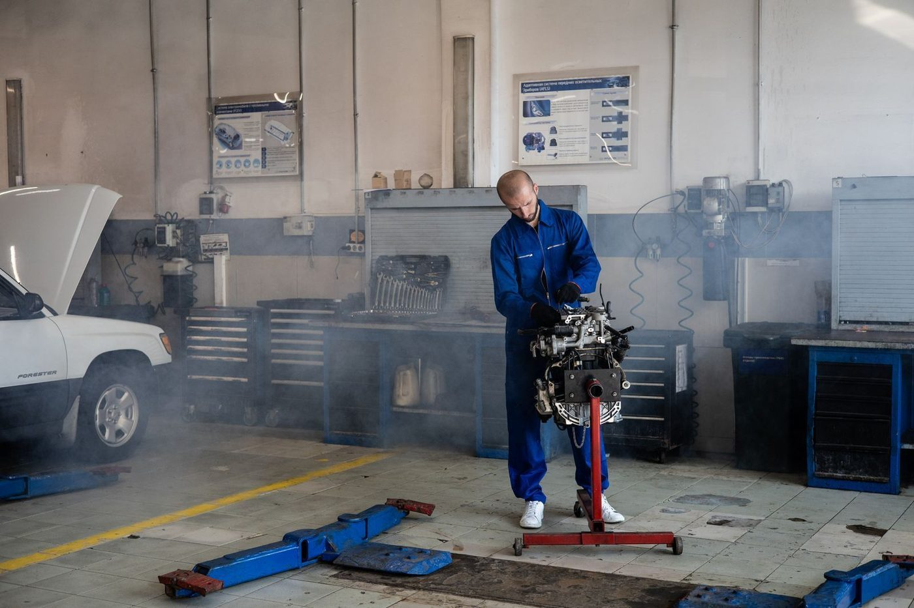
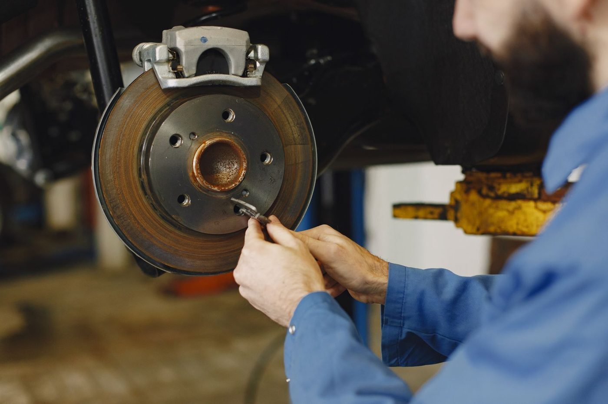
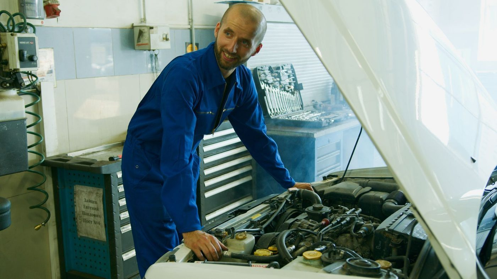

Major to minor repairs in Corpus Christi
T and A's Auto Service handles major to minor engine repair in Corpus Christi, plus brakes, suspension and steering checks, tune-ups, air conditioning checks, diagnostics, and oil changes. The shop accepts warranty and insurance claims.
T and A's Auto Service is at 602 S Staples St in Corpus Christi. The shop's own description lists major to minor engine repair, brakes, suspension and steering and brake checks, tune-ups, air conditioning performance checks, electrical and computer diagnostics, oil changes, C-V joints, and struts and shocks.


602 S Staples St, Corpus Christi, TX
Monday to Friday, 9:00 AM to 6:00 PM; Saturday, 10:00 AM to 2:00 PM